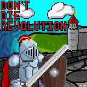
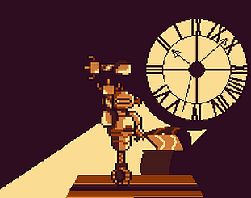
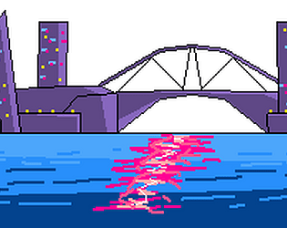
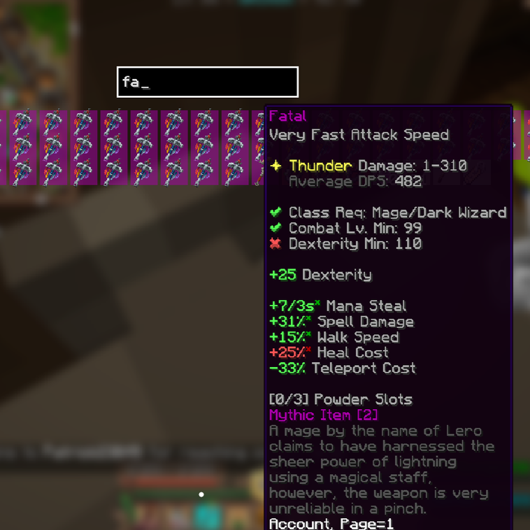
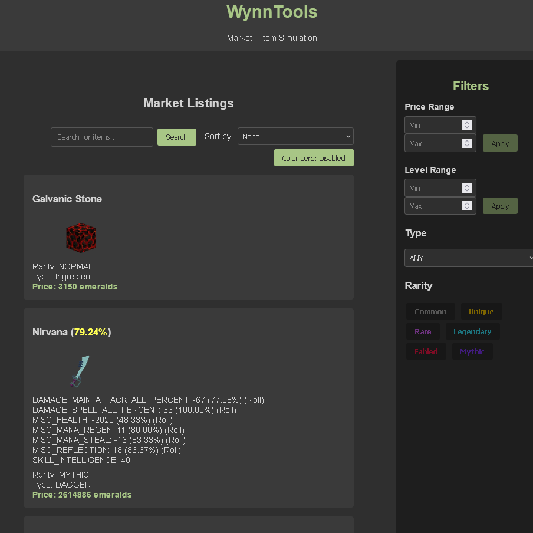
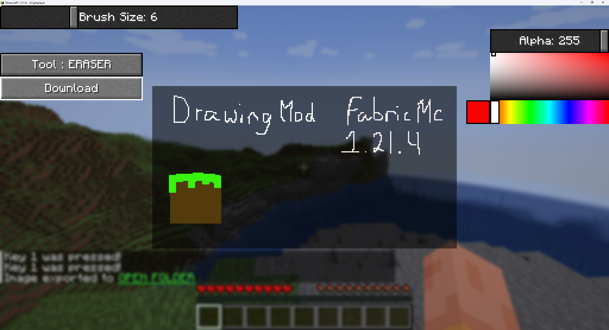

I'm a third year computer science student based in Victoria, BC. I have experience in various programming languages and technologies, with a passion for graphics and game development. I primarily work in Java and have experience with C#, JavaScript, Python and C/C++

Technologies: C#, Unity
Worked in a team to develop a 2D rogue-like game using C# and the Unity Game Engine.

Technologies: C#, Unity
A 2D puzzle platformer game built in Unity by me and four other teammates for the JuniperDev game jam. I focused on implementing game mechanics and camera control.

Technologies: C#, Unity
A 2D puzzle platformer game built in Unity by me and four other teammates for the GMTK game jam. I focused on implementing abilities, terrain mechanics and camera control

Technologies: Java, Supabase
A Minecraft mod that collects market data and transmits it to a Supabase Database. It also features other Quality of Life features, including item quality overlays and a inventory search GUI.

Technologies: JavaScript, CSS, HTML, Vercel, Supabase
A website that queries in-game market data from Wynncraft and displays it on the site

Technologies: Java
A Minecraft mod that allows players to create drawings within the game and export them as pngs to share/store.